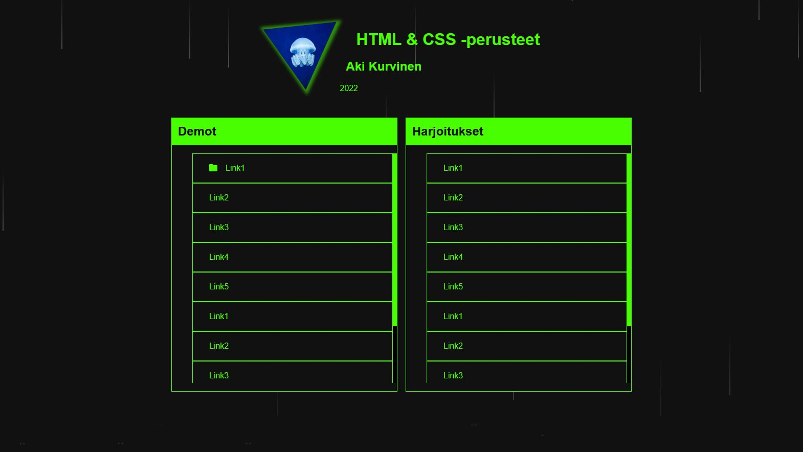

html_css_basics
|
├── index.html
├── style.css
|
├── demos
│ ├── d1
│ └── d2
│ └── ...
|
├── exercises
│ ├── e1
│ ├── e2
│ └── ...
|
Etusivu palautuksille
- Laadi etusivu palautettaville demoille ja harjoituksille.
- Tee git-kansion juureen index.html ja style.css
- Sivulla on linkki jokaiseen demoon ja harjoitukseen.
- Työnnä GitHubiin
Etusivulla saa käyttää luovuutta ja tehdä siitä oman näköisensä.
Tunnilla tehtävä esimerkki:

Jos on aikaa ja kiinnostusta
Lisää sivulle avatar-kuva ja muotoile se CSS clip-path makerilla
Voit lisätä kuvakkeita esim. Fontawesome
-kirjastosta
<head>
<link rel="stylesheet" href="https://cdnjs.cloudflare.com/ajax/libs/font-awesome/6.1.2/css/all.min.css"
integrity="sha512-1sCRPdkRXhBV2PBLUdRb4tMg1w2YPf37qatUFeS7zlBy7jJI8Lf4VHwWfZZfpXtYSLy85pkm9GaYVYMfw5BC1A=="
crossorigin="anonymous" referrerpolicy="no-referrer" />
</head>
<body>
<i class="fa fa-folder" aria-hidden="true"></i>
</body>
Tai lisätä sade-efektin (rain.js & rain.css + jQuery)
CodePen | CSS Rain Effect by Aaron Rickle
<head>
<script src="https://ajax.googleapis.com/ajax/libs/jquery/3.6.0/jquery.min.js"></script>
<script src="rain.js"></script>
<link rel="stylesheet" href="rain.css">
</head>
<body>
<!-- insert after other content in body -->
<div class="rain"></div>
<script>rain();</script>
</body>
// rain.js
var rain = function() {
$('.rain').empty();
var increment = 0;
var drops = "";
while (increment < 95) {
var randoHundo = (Math.floor(Math.random() * (98 - 1 + 1) + 1));
var randoFiver = (Math.floor(Math.random() * (4 - 2 + 1) + 2));
increment += randoFiver;
drops += '<div class="drop" style="left: ' + increment + '%; bottom: ' + (randoFiver + randoFiver - 1 + 100) + '%; animation-delay: 0.' + randoHundo + 's; animation-duration: 0.5' + randoHundo + 's;"><div class="stem" style="animation-delay: 0.' + randoHundo + 's; animation-duration: 0.5' + randoHundo + 's;"></div><div class="splat" style="animation-delay: 0.' + randoHundo + 's; animation-duration: 0.5' + randoHundo + 's;"></div></div>';
}
$('.rain').append(drops);
}
/* rain.css */
:root{
--rain-color: rgba(255, 255, 255, 0.25)
}.drop {
position: absolute;
bottom: 100%;
width: 10px;
height: 120px;
pointer-events: none;
animation: drop 0.5s linear infinite;
z-index: -1;
}
@keyframes drop {
0% {
transform: translateY(0vh);
}
75% {
transform: translateY(100vh);
}
100% {
transform: translateY(100vh);
}
}
.stem {
width: 2px;
height: 100%;
margin-left: 7px;
background: linear-gradient(to bottom, rgba(255, 255, 255, 0), var(--rain-color));
animation: stem 0.5s linear infinite;
}
@keyframes stem {
0% {
opacity: 1;
}
65% {
opacity: 1;
}
75% {
opacity: 0;
}
100% {
opacity: 0;
}
}
.splat {
width: 15px;
height: 10px;
border-top: 3px dotted var(--rain-color);
border-radius: 50%;
opacity: 1;
transform: scale(0);
animation: splat 0.5s linear infinite;
display: none;
}
.splat {
display: block;
}
@keyframes splat {
0% {
opacity: 1;
transform: scale(0);
}
80% {
opacity: 1;
transform: scale(0);
}
90% {
opacity: 0.5;
transform: scale(1);
}
100% {
opacity: 0;
transform: scale(1.5);
}
}